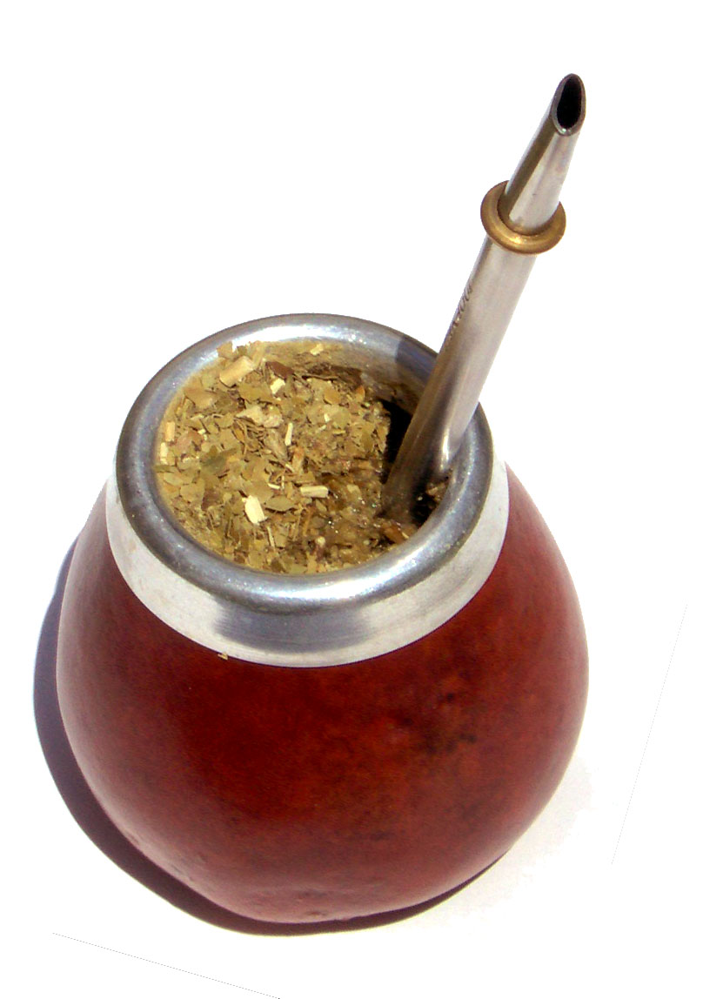

Variedad de mates
Realizamos mates personalizados, que pueden ser de diferentes materiales, dependiendo el uso que le van a dar. Si desean tomar tereré recomendamos utilizar uno de vidrio, mientras que, para el hogar recomendamos de madera. Finalmente, para la ruta recomendamos que sean plasticos, ya que a estos no les afecta el tener la yerba puesta durante mucho tiempo. A continuación podran ver algunos modelos tales como los que hemos explicado.
